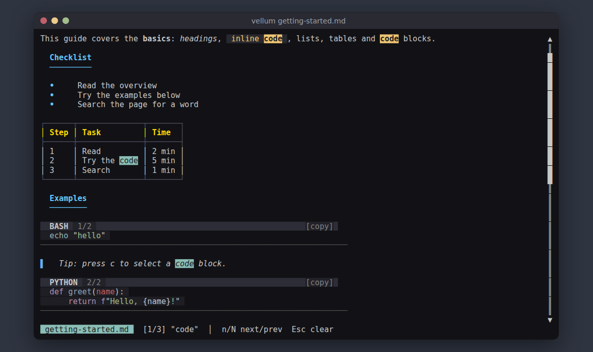
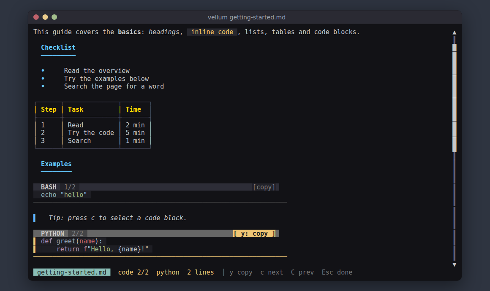

Usage
Using vellum
Open a file, read it, search it, follow its links and copy its code. Everything below applies to release 0.7.0.
- Opening files
- Keyboard shortcuts
- Mouse
- Search
- Links and history
- Copying code blocks
- Images and video
- Themes
- Code view and about page
- Hidden characters
- Command-line options
- Environment variables
Opening files
vellum README.md # open in the viewer
vellum --theme dracula notes.md # open with a theme
vellum --theme solarized # preview a theme on a sample page
vellum --code README.md # open in $EDITOR, bat or less instead
vellum --remote-images README.md # also fetch https imagesA file argument is required unless you pass --theme or --page. The
status bar at the bottom shows the file name, the current line and percentage, and the keys that
apply right now.
Keyboard shortcuts
| Key | Action |
|---|---|
| j / Down | Scroll down one line |
| k / Up | Scroll up one line |
| PgDn / Ctrl+F | Page down |
| PgUp / Ctrl+B | Page up |
| g / Home | Top of the document |
| G / End | Bottom of the document |
| / | Start a search |
| n / N | Next / previous search match |
| Tab / Shift+Tab | Focus the next / previous link |
| Enter | Follow the focused link, run a search, or copy the selected code block |
| Alt+Left / Alt+Right | Back / forward between documents |
| c or ] | Select the next code block |
| C or [ | Select the previous code block |
| y | Copy the selected code block |
| Esc | Clear the search, or deselect the link or code block |
| e | Code view: open the file in $EDITOR, bat or less |
| a | About page |
| q / Ctrl+C | Quit |
Mouse
- The wheel scrolls three lines at a time.
- A click on a link follows it.
- A click on a code block selects it. A click on its
[ y: copy ]label copies it.
Search
Press /, type the text, press Enter. The search is plain text and
case-insensitive: no regular expressions, no wildcards. Every occurrence is highlighted, the current
one in yellow and the rest in cyan, and the status bar shows [2/7] style counts.
n and N move between matches, Esc clears them. A search with no hits
shows no match.
The query takes printable characters only, up to 200. Backspace edits it. While you
type, q is part of the query, not quit. Code block labels such as [copy] are
not searched.

Links and history
Tab and Shift+Tab move the focus between links. The status bar shows the focused link's target. Enter, or a click, follows it:
#anchorlinks jump to the heading inside the document.- Links to local Markdown files open them in vellum.
http,httpsandmailtolinks open in your default application throughxdg-openon Linux oropenon macOS.
Moving between documents builds a history. Alt+Left goes back and Alt+Right goes forward; the status bar shows how many steps each way.
Copying code blocks
Copying takes two steps, select then copy, so a stray key or click never overwrites your clipboard.
- Select a block. c or ] selects the next one, C or [
the previous one, or click it. Block headers are numbered
1/3,2/3and so on, and the selected block shows[ y: copy ]. - Copy it with y or Enter, or click the
[ y: copy ]label.
The status bar says which method was used. The last copied block stays marked
[copied]. Esc deselects. Hidden control characters such as ESC and CR are
never copied.

How the text reaches the clipboard
| Where vellum runs | Method |
|---|---|
| Linux, Wayland session | wl-copy |
| Linux, X11 session | xclip, then xsel |
| macOS | pbcopy |
| Windows and WSL | clip.exe |
| No clipboard tool installed | The system clipboard directly (nothing to install) |
| No system clipboard either (plain console) | OSC 52 escape sequence to the terminal |
| VTE terminal (GNOME Terminal, Tilix, xfce4-terminal) with only OSC 52 left | Error: no clipboard available: install xclip (X11) or wl-clipboard (Wayland); this terminal ignores OSC 52 |
| Over SSH | Always OSC 52 |
On Linux, a copy made without a clipboard tool is held by a small
vellum --clipboard-daemon process, so it stays available after vellum exits. That
process ends as soon as anything else is copied.
Over SSH a clipboard tool on the remote host would fill the remote clipboard, so vellum skips the
tools and sends OSC 52. The terminal on the machine you type at puts the text in its clipboard.
vellum treats the session as SSH when SSH_TTY, SSH_CONNECTION or
SSH_CLIENT is set.
OSC 52 needs terminal support. kitty, WezTerm, iTerm2, foot and Windows Terminal allow it; xterm
needs allowWindowOps. Inside tmux, set one of these in ~/.tmux.conf:
set -g set-clipboard on
# or
set -g allow-passthrough onOSC 52 copies are limited to about 73 KB of code. vellum refuses a larger block with a message instead of copying part of it. A clipboard tool that hangs is stopped after 2 seconds.
Images and video
Markdown images and HTML <img> tags render inline. vellum asks the terminal
which graphics protocol it supports and uses the best one: Kitty, then Sixel, then iTerm2. Any other
terminal gets half-block characters, which work everywhere at lower resolution. Set
VELLUM_PROTOCOL=halfblocks to skip the terminal query and always use half-blocks.
Links to .mp4, .webm, .mov, .avi and
.mkv files show the first frame as a thumbnail when ffmpeg is installed.
SVG images are rasterised. An SVG never loads files it references; only inline
data: images inside it are drawn.
Remote images
Opening a document makes no network requests. A remote image shows as
[remote image not loaded: host]. To fetch them, pass --remote-images or
set VELLUM_REMOTE_IMAGES=1. Fetches then:
- use https only, redirects included;
- refuse private, loopback and link-local addresses, checked when the name resolves;
- time out after 10 seconds and stop at 20 MiB, with a limit on pixel count.
VELLUM_NO_REMOTE_IMAGES set to any value turns fetching off, even with
--remote-images.
Themes
Three themes are built in: dark (the default), dracula and
solarized. Pick one with --theme NAME or -t NAME. With no
file, vellum shows a sample page in that theme.
Your own themes are JSON files in ~/.config/vellum/themes/, or
$XDG_CONFIG_HOME/vellum/themes/ when that is set. --theme mine loads
mine.json. A user theme with a built-in name replaces the built-in. Fields you leave
out take the dark theme's values, so a theme can be a few lines:
{
"headings": { "h1": "#ff79c6", "h2": "#bd93f9" },
"inline": { "link": "#8be9fd" },
"code": {
"default_theme": "base16-ocean.dark",
"by_language": { "rust": "base16-ocean.dark" }
}
}The sections are headings (h1 to h6), code
(bg, header_bg, label_fg, default_theme,
by_language), inline (code_fg, code_bg,
link, strikethrough) and blocks (blockquote,
hrule, table_border, table_header, list_bullet,
image_icon, image_alt). The built-in files in the repository's
themes/ folder are
complete examples.
Code view and about page
e, or --code on the command line, opens the raw file in
$EDITOR, then $VISUAL, then bat, then less,
then cat, whichever is found first. Close it to return to the viewer.
a prints the author and project information outside the viewer; press
Enter to return. vellum --page prints the same page and exits.
Hidden characters
A Markdown file can carry characters you cannot see: terminal escape sequences, carriage returns, bidirectional marks, zero-width characters and tag characters. vellum strips them from the text, link targets, status messages and the file name before it displays, searches or copies anything. A file cannot move your cursor, recolour your terminal or hide text in a copied command. Emoji joiners and variation selectors are kept, so emoji still render.
Command-line options
| Option | Effect |
|---|---|
<FILE> | Markdown file to open |
-t, --theme <NAME> | Colour theme: dark, dracula, solarized or a user theme |
-c, --code | Open the file in code view instead of the viewer |
--page | Print author and project information |
--remote-images | Fetch https images; same as VELLUM_REMOTE_IMAGES=1 |
-h, --help | Show help |
Environment variables
| Variable | Effect |
|---|---|
VELLUM_REMOTE_IMAGES=1 | Fetch remote https images |
VELLUM_NO_REMOTE_IMAGES | Any value: never fetch remote images |
VELLUM_PROTOCOL=halfblocks | Draw images with half-blocks; skip the terminal query |
XDG_CONFIG_HOME | Where user themes are looked up (vellum/themes/ under it) |
EDITOR, VISUAL | Program used by code view |
TMUX | Set by tmux; vellum wraps OSC 52 for it |
SSH_TTY, SSH_CONNECTION, SSH_CLIENT | Set by SSH; vellum copies with OSC 52 only |